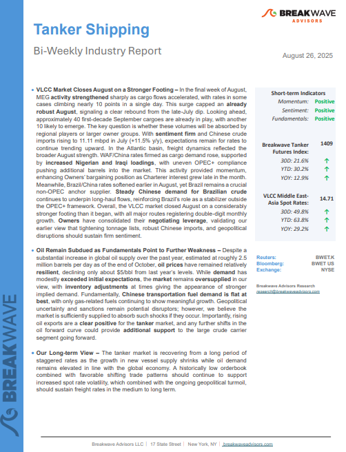
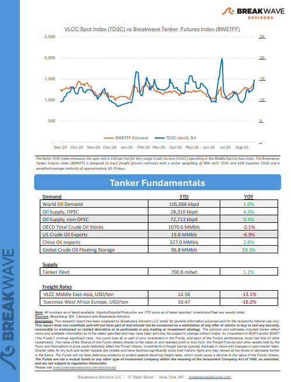
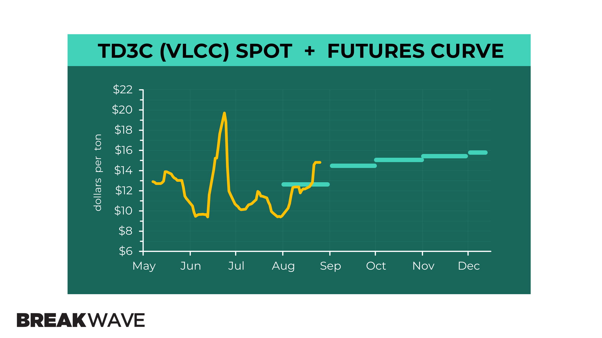
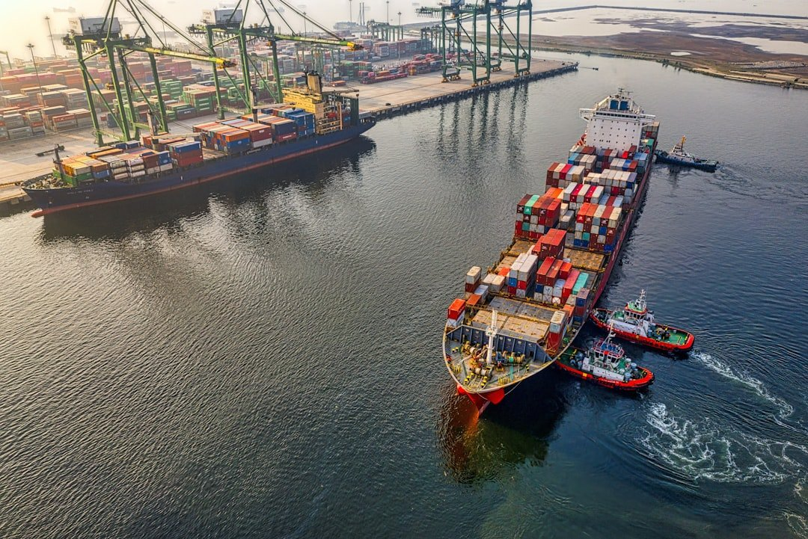

Welcome toBreakwave AdvisorsWeekend Read
As the week comes to a close, take a moment to review the key insights from the past few days. Missed something? We've gathered all the top insights for you to catch up at your convenience.
Breakwave Shipping Report
VLCC Market Closes August on a Stronger Footing– In the final week of August, MEGactivity strengthenedsharply as cargo flows accelerated, with rates in some cases climbing nearly 10 points in a single day.


Highlight Of The Week
Dry bulk FFAs pull back after hitting highest levels of 2025
“As we look into the rest of the year, both Capes and Panamax spot rates are elevated versus recent history and if the seasonal pattern of stronger Q4 demand plays out this year, then 𝘄𝗲 𝗺𝗶𝗴𝗵𝘁 𝗯𝗲 𝗳𝗮𝗰𝗶𝗻𝗴 𝗮𝗻𝗼𝘁𝗵𝗲𝗿 𝘀𝘂𝗿𝗽𝗿𝗶𝘀𝗶𝗻𝗴𝗹𝘆 𝘀𝘁𝗿𝗼𝗻𝗴 𝗽𝗲𝗿𝗶𝗼𝗱 something that is not in the mind of traders right now as the futures curve is essentially flattish”,Breakwave Advisors' managing partnerJohn Kartsonastold Tradewinds.
Macroeconomic Forces and Structural Realignment: An Analysis of the Maritime Asset Markets (2025)
Disciplined Capital Allocation: means favoring eco, provenance -secure, and charter-backed assets, while this doesn’t necessarily means that shrewd seasoned ship-owners are avoiding tonnage whose upside is based on their cyclical nature.
Doric Weekly Market Insights
Indian Salt Across Asian Waters
India’s salt sector is a global heavyweight, ranking among the top three producers worldwide with output averaging 30 mln mt annually.
BRS Weekly Dry Bulk Newsletter
Are VLCCs Poised for a Comeback?

Poten & Partners recently shared a compelling outlook in their "Ready For A Rebound" report, suggesting that Very Large Crude Carriers (VLCCs) may be the first beneficiaries of an upcoming tanker market upturn.
VLCCs are structurally better positioned than ever
Return of Growth in Gas Engine Vehicle Sales in China
As we discussed in Commodore Research's most recent Weekly China Report, July saw a total of 2.59 million vehicles sold in China
From Commodore's Weekly Dry Bulk Reports
Arctic is no longer a distant “what if” for container shipping

China is set to mark a milestone this September with the launch of its first liner-type container service between Asia and Europe via the Northern Sea Route (NSR).
Intermodal Weekly Market Report
Spot the Surge

Charlie Grey of Tankers International explains why the window to capitalise on the VLCC spot market is opening rapidly, demanding timely and strategic action.
Tankers International Editorial
India crude imports to rebound in September and October
India crude imports fall in August due to lower arrivals into Nayara Energy refinery. We expect crude flows into India to rise in September and October.
Vortexa Freight Weekly
Panamaxes Finding Strength
Overall dry bulk rates climbed last week, with all but capesize rates ending up week-on-week.
From Commodore's Weekly Dry Bulk Reports
Metals gain amid renewed supply restrictions
Crude oil markets pushed higher amid concerns of renewed restrictions on Russian supply. Constraints on Chinese output also supported base metals.
Commodities Wrap